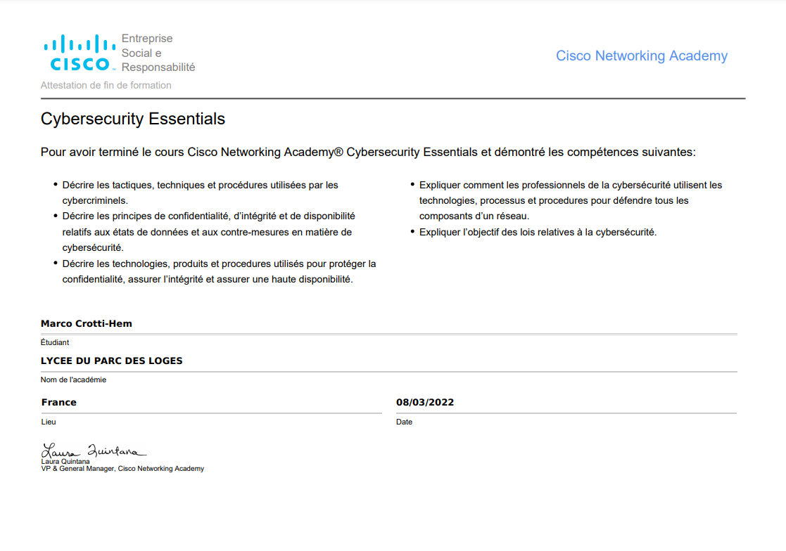
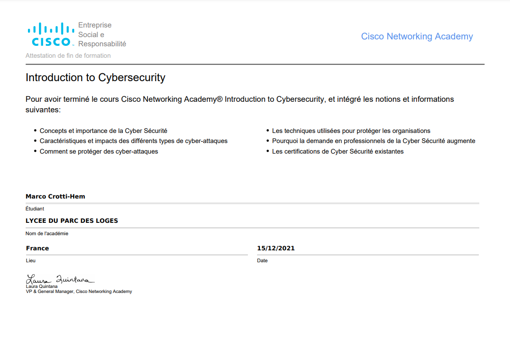
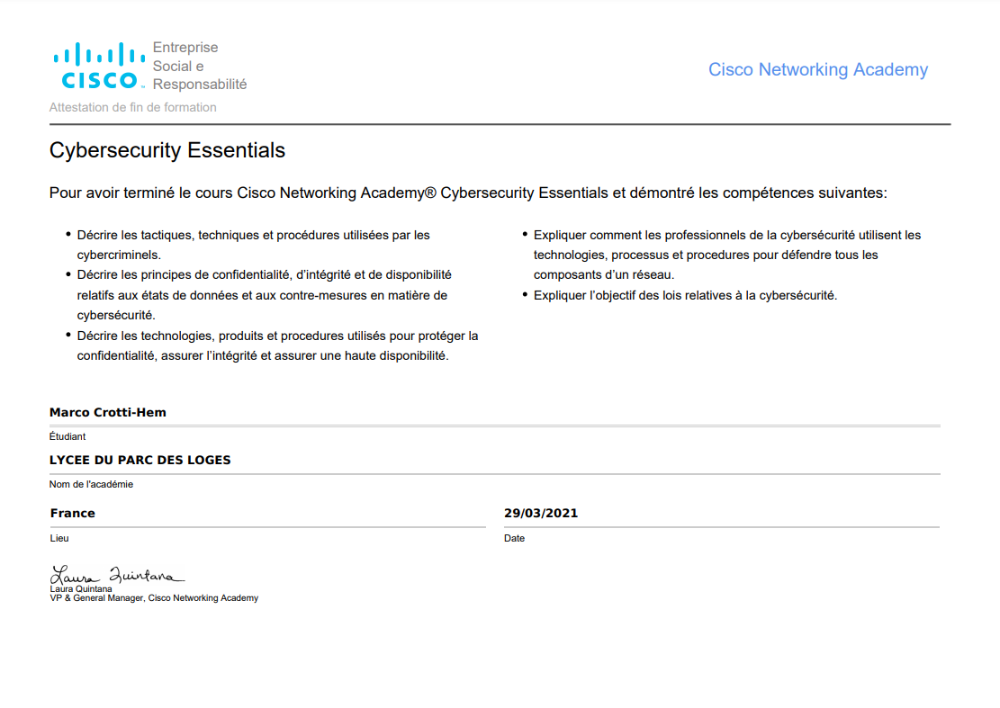

Présentation
Bonjour à toi et bienvenue sur mon Portfolio ! Je m'appelle Marco Crotti-Hem, j'ai 20 ans & je suis actuellement en Licence Professionnelle MIAW (Métiers de l’informatique : applications web) en option DAW2I (Développement avancé d’applications Web Internet et Intranet), spécialisée en programmation, à l'Institut Universitaire à Evry-Courcouronnes.
>> Viens découvrir mon CV pour plus de détails !
Qu'est ce que la licence professionnelle MIAW ?
La licence professionnelle Métiers de l'informatique : Applications Web est une formation en alternance de un an. Il s'adresse aux personnes souhaitant travailler dans la programmation ou l'administration de réseaux. Ce dernier se présente sous deux spécialité : DAW2I (Développement avancé d’applications Web Internet et Intranet) et ASR2I (Administration et sécurisation des réseaux et services Internet et Intranet).L'option DAW2I en détails (Développement avancé d’applications Web Internet et Intranet) 💻
Ce cursus porte sur le Développement Web en Front-End et Back-End, et intégration de produits et de services Intranet ou/et Internet. - Développeur d’applications Web - Développeur Full Stack (Front-End & Back-End) - Développeur d’applications mobiles - Responsable informatiqueCertifications
  